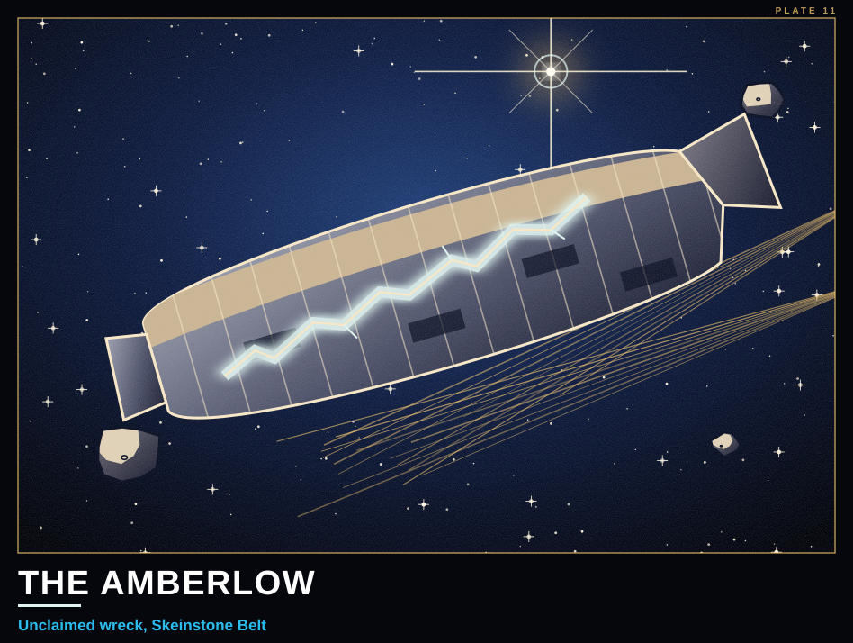
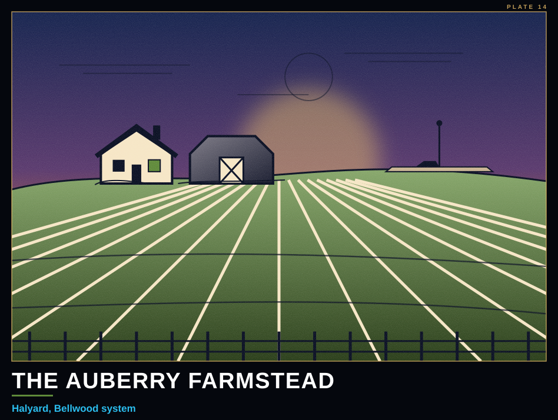
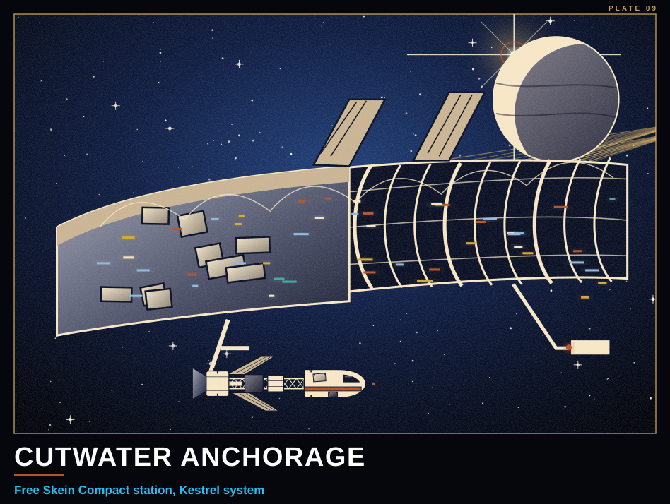
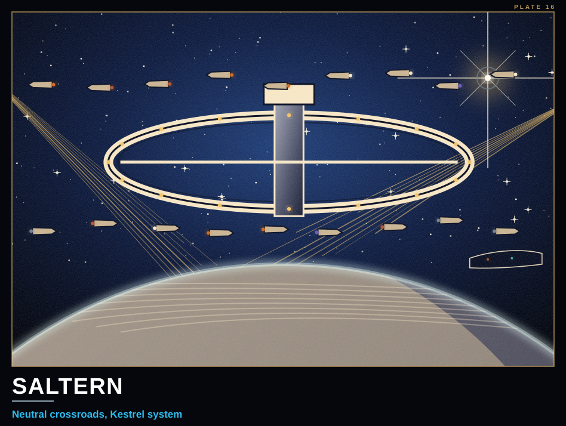

Free Skein Compact · Kestrel Hub
Secure Public Network · hub edition
The Ferrylight Dispatch
Free wire. Everything else is a deal.
KESTREL ARRIVAL EDITION • KESTREL SYSTEM • RELAY RESTORED AT THE SALTERN MOUTH · Signal normal

Where from here
Three berths within reach of a loaner with fresh scorch marks. Pick one before you burn.

Halyard
Independent farm world. One landing field, no faction berths, and nobody there asks much of anyone. A dockhand will patch a hull.
Sensor Log Verification — Auberry Farmstead40 marks/personConfirm an unexplained resonance reading at a farmstead. Photo log requested. Client not listed; not vouched by any broker. Time: 2 hrs.
Pump Repair — Irrigation Line30 marks/personAn engineer's hands wanted. Parts on site. Time: 4 hrs.
Fence & Hauling — Harvest Week25 marks/personHeavy lifting, three days, meals included. Time: 24 hrs.
Harvest Week Under WayThe independent world's autumn gathering opens this cycle. All crews welcome.
Ironveil Survey Shuttle Parked on HalyardThe shuttle has been on the ground for several days. No public statement from the Concordat. Residents report amber lamps set up around the landing field.
Halyard Parish Board Debates Replacing the Church Bell With a Ward-LampThe priest argues the bell is sufficient. Attendance at the vote was the highest in nine years.

Cutwater Anchorage
The Compact's station and your loan's home berth. Rill's Repair Shop takes hull work on a ledger (50-80). Bunk and board, 5 marks a day.
Compact-Vouched Odd Jobs20-50 marks/personAsk S. Vale. Whatever needs doing this week. Time: 4 hrs.

Saltern
Neutral crossroads. Every faction keeps a berth and pretends not to see the others. Full-price Crossroads Exchange; flares 8 at the Chandlery. Lamp-watch on every ring.
Meter-Reader — Port Authority25 marks/personWalk the ring, read the meters, sign the slate. Time: 4 hrs.
Diplomat's Luggage30 marks/personCarry it from the berth to the residence. Don't open it. Time: 2 hrs.
Hold a Table20 marks/personSit at a negotiation and look like you'd be trouble. Time: 3 hrs.
Paid placement
Halyard Growers' Co-opHarvest-week prices on feed, fencing wire and pump seals.
Berths and departures
Relay restored at the Saltern Mouth. Queued items delivered: first sync since Cutwater.
Berths in reach: Saltern ring, Cutwater Anchorage, or onward by thread.
Fewer listings than last cycle.
Word from the docks
Belt Claim Crews Log White Flash at Unclaimed DerelictTwo claim-boats working the Skeinstone Belt report a single white flash at the old wreck their charts list only as the Amberlow, followed by a cold spike on their hull sensors and no further light. A small craft was seen leaving at speed with Vantage ships behind it. Waystation 7 declines comment. Claimants are advised to keep clear of the wreck.
UNVERIFIED — Local InterestFarmstead sensors on Halyard (Bellwood) logged an unexplained resonance event, source unconfirmed. The parish landing lamp chimed at the same moment; no caster reported. Concordat survey interest already noted in-system. Cross-reference, automatic: event timestamp falls within the same hour as the unattributed disturbance logged in the Skeinstone Belt. Correlation unverified. Filed under: rumors, paying work, 'someone else's problem.'
Vantage Security Seeks Compact RunaboutVantage asks dock offices across Kestrel to report an unregistered Compact runabout in connection with a picket lost near the Ashwake approach and an incident in the Skeinstone Belt. A reward is offered for its berth.
Ashwake Overseers Pay 200 Marks in Scrip for Tips on 'Special' HandsSeveral crews now refuse to work beside anyone who keeps to themselves.
Halyard Farmer Says Traveling Healer Fixed Her Boy's LegShe says the healer 'just laid a hand on it and it was gone.' The local priest is unavailable for comment.
Carried by the Free Skein Compact, Kestrel Hub. The wire is free; the rest is a deal. Listings are posted by whoever pays the broker, and paid placement sits on top. This hub keeps no Registry log. Ask a Compact broker before you trust a stranger's job.